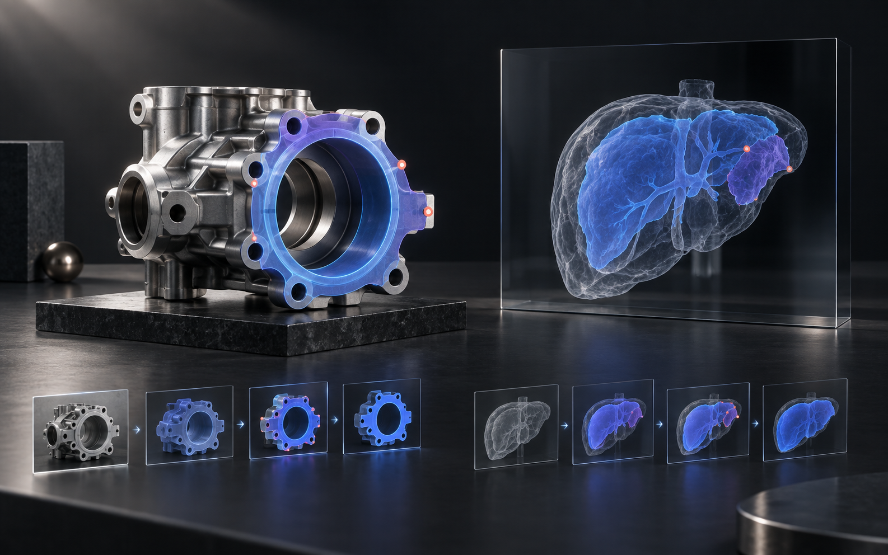

01
DiffClick
Click-Differentiated Enhancement
区分正负点击的语义角色，强化交互式分割中的前景与背景证据；在无负点击设置下，四个基准所需点击数降低 3.4%—14.0%。
AVAILABLE · DEC 2026
视觉感知 · 持续适应 · 具身操作
我是宋思琪，人工智能与计算机视觉博士。研究从交互式分割与持续学习出发，正在延伸至 3D 可供性感知与长程机器人操作；也把算法做成真实团队可使用的产品。
SELECTED RESEARCH · 2025—2027
从一次点击，到新类别与新场景，再到机器人长程任务：我的研究关注模型如何处理不断变化的证据。
Click-Differentiated Enhancement
Spectral-Decomposed Prompting
Semantic × Spatial Adaptation
Multi-Granular VLM Adaptation

FROM RESEARCH TO PRODUCT
把交互式分割与持续学习，转化为面向真实业务的连续标注能力。
项目阶段性统计
CURRENT FRONTIER · IN PROGRESS
3D AFFORDANCE
给定点云与复杂语言指令，联合推理动作顺序、部件空间关系与可交互区域；重点处理掩码重复、部件交换和边界溢出。
EMBODIED VLA
基于 SmolVLA 与 Flow Matching，研究视觉、执行历史与关系信息如何共同支持抓取、运输、精细插入和重复操作。
EXPERIENCE
苏州英特雷真智能科技 · 校企合作
挪威船级社 DNV
挪威船级社 DNV
OPEN TO AI / CV / EMBODIED PERCEPTION ROLES